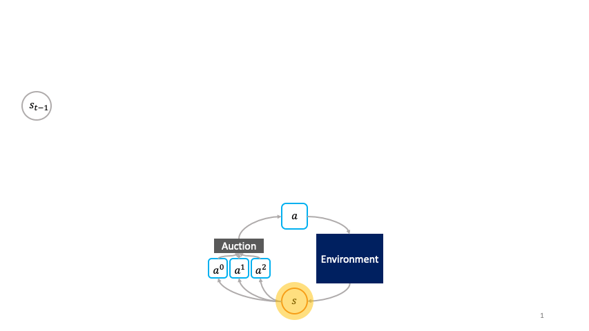

Michael Chang
I am a Research Scientist at OpenAI working on Sora.
Prevously, I was a Research Scientist at Google DeepMind working on Project Astra and Gemini.
I graduated from my Ph.D. from Berkeley AI Research (BAIR) in 2023, advised by Professors Sergey Levine and Tom Griffiths, and funded by the NSF Graduate Research Felowship. My dissertation talk can be found here.
During my Ph.D., I was fortunate to have interned at DeepMind and Meta AI. Besides my Ph.D. advisors, I have been fortunate to have received mentorship from Jürgen Schmidhuber, Josh Tenenbaum, Antonio Torralba, Honglak Lee, Will Whitney, Tejas Kulkarni, Ruben Villegas, and Yuting Zhang, who helped me begin my path into AI research.
Google Scholar / LinkedIn / Github / Twitter / Goodreads / Swimming

Chat-Tree
A tree-structured chat. Play with it here!
Project Astra
I led the long memory, low latency, interruption, and event-detection capabilities of the real-time multimodal assistant that was demonstrated at Google IO 2024.
See the official video, where you can find demonstrations of proactive response to visual stimuli (0:10-0:18) and long memory (1:20-1:34).
I co-watched the Google I/O keynote livestream with Astra, which was then posted immediately after the main keynote and appended to the developer keynote.
I also similarly co-watched OpenAI's GPT4o announcement a day earlier, and a clip of that can be found here.
Gemini
I worked on evaluating Gemini's hours-long video understanding capabilities, where I was co-responsible for the results shown in Fig. 9, Fig. 15, Fig. 28, and Table 47 of the Gemini 1.5 Pro paper.
The artificial programmer is the drosophila of AGI
I define AGI as the capacity to create new knowledge. The process of knowledge creation is the iterative cycle of conjecture and criticism.
Similarly, the process of programming, and debugging, is also an iterative cycle of conjecture and criticism, where the knowledge is encoded as the program. We conjecture programs for achieving a certain functionality and we criticize those programs by running them through tests. If the code fails, we conjecture reasons for why the code does do not what we want, and we criticize those reasons by comparing what we expect the values of the variables to be with what the values actually turn out to be.
The processes of programming and of knowledge creation are isomorphic.
Therefore, I believe that the artificial programmer is the drosophila of AGI: studying the process of writing and debugging code can teach us the fundamental principles for building self-improving knowledge-creating AGI systems.
Code is also cheap, verifiable, and valuable, so I believe that the shortest path to AGI is through the goal of building artificial programmers.
The "No-Push" Principle
A large fraction of our relationship with information-processing machines has been to spoon-feed machines information that they already have access to.
Examples include doing taxes, copying data from one spreadsheet to another, and filling out forms.
Such tasks reduce humans to mindless communication channels. They stifle our creative potential.
I therefore propose the No-Push Principle: Humans should not have to push information to machines that is already there. The machines should pull that information on its own.
A good example of software that has evolved in accordance to the No-Push Principle is navigation software. A few decades ago, if we wanted to go somewhere we needed to manually type in our current location to get a route to our destination. Now our phones automatically pull our location information without us having to specify it. This is good. Trends like this should continue.
Principles like the No-Push Principle give us a way to bifurcate the world and identify problems to solve. Next time when you interact with computers, ask yourself, "Am I unnecessarily pushing information to the machine that it should already know about?" If yes, then that's a problem to solve.
|
Our neural networks today are strikingly similar to what computing was like a hundred years ago. Back then we designed specialized electronic circuits for each different task; in the past decade we have been training specialized neural circuits for each different task. In the 1940s we developed the von Neumann architecture for computing; now our retrieval augmented transformers are doing essentially the same thing. Just as software abstractions were key to scaling our electronic circuits to the modern software stack, I believe that to shift artificial intelligence research from building learning circuits to building learning software, we also need to invent the analog of software abstractions for neural networks. My research is on what I call neural software abstractions: understanding the principles that make abstractions in traditional software powerful, and translating these principles into deep learning algorithms to enable neural learners to construct their own abstractions for modeling and manipulating systems. Examples include:
|
|
|
The list below highlights my publications during and before my Ph.D. For an updated list of my most recent publications, please see my Google Scholar.

|
Object Representations as Fixed Points: Training Iterative Inference Algorithms with Implicit Differntiation
Deep generative models, particularly those that aim to factorize the observations into discrete entities (such as objects), must often use iterative inference procedures that break symmetries among equally plausible explanations for the data. Such inference procedures include variants of the expectation-maximization algorithm and structurally resemble clustering algorithms in a latent space. However, combining such methods with deep neural networks necessitates differentiating through the inference process, which can make optimization exceptionally challenging. We observe that such iterative amortized inference methods can be made differentiable by means of the implicit function theorem, and develop an implicit differentiation approach that improves the stability and tractability of training such models by decoupling the forward and backward passes. This connection enables us to apply recent advances in optimizing implicit layers to not only improve the stability and optimization of the slot attention module in SLATE, a state-of-the-art method for learning entity representations, but do so with constant space and time complexity in backpropagation and only one additional line of code. |

|
Modularity in Reinforcement Learning via Algorithmic Independence in Credit Assignment
Many transfer problems require re-using previously optimal decisions for solving new tasks, which suggests the need for learning algorithms that can modify the mechanisms for choosing certain actions independently of those for choosing others. However, there is currently no formalism nor theory for how to achieve this kind of modular credit assignment. To answer this question, we define modular credit assignment as a constraint on minimizing the algorithmic mutual information among feedback signals for different decisions. We introduce what we call the modularity criterion for testing whether a learning algorithm satisfies this constraint by performing causal analysis on the algorithm itself. We generalize the recently proposed societal decision-making framework as a more granular formalism than the Markov decision process to prove that for decision sequences that do not contain cycles, certain single-step temporal difference action-value methods meet this criterion while all policy-gradient methods do not. Empirical evidence suggests that such action-value methods are more sample efficient than policy-gradient methods on transfer problems that require only sparse changes to a sequence of previously optimal decisions. |
|

|
Decentralized Reinforcement Learning: Global Decision-Making via Local Economic Transactions
We develop the societal decision-making framework in which a society of primitive agents buy and sell to each other the right to operate on the environment state in a series of auctions. We prove that the Vickrey auction mechanism can be adapted to incentive the society to collectively solve MDPs as an emergent consequence of the primitive agents optimizing their own auction utilities. We propose a class of decentralized reinforcement learning algorithms for training the society that uses credit assignment that is local in space and time. The societal decision-making framework and decentralized reinforcement learning algorithms can be applied not only to standard reinforcement learning, but also for selecting options in semi-MDPs and dynamically composing computation graphs. We find evidence that suggests the potential advantages of a society’s inherent modular structure for more efficient transfer learning. |
|
|
Entity Abstraction in Visual Model-Based Reinforcement Learning
We present object-centric perception, prediction, and planning (OP3), which to the best of our knowledge is the first entity-centric dynamic latent variable framework for model-based reinforcement learning that acquires entity representations from raw visual observations without supervision and uses them to predict and plan. OP3 enforces entity-abstraction -- symmetric processing of each entity representation with the same locally-scoped function -- which enables it to scale to model different numbers and configurations of objects from those in training. Our approach to solving the key technical challenge of grounding these entity representations to actual objects in the environment is to frame this variable binding problem as an inference problem, and we developing an interactive inference algorithm that uses temporal continuity and interactive feedback to bind information about object properties to the entity variables. |

|
MCP: Learning Composable Hierarchical Control with Multiplicative Compositional Policies
We propose multiplicative compositional policies (MCP), a method for learning reusable motor skills that can be composed to produce a range of complex behaviors. Our method factorizes an agent's skills into a collection of primitives, where multiple primitives can be activated simultaneously via multiplicative composition. This flexibility allows the primitives to be transferred and recombined to elicit new behaviors as necessary for novel tasks. We demonstrate that MCP is able to extract composable skills for highly complex simulated characters from pre-training tasks, such as motion imitation, and then reuse these skills to solve challenging continuous control tasks, such as dribbling a soccer ball to a goal, and picking up an object and transporting it to a target location. |

|
Doing more with less: meta-reasoning and meta-learning in humans and machines
Artificial intelligence systems use an increasing amount of computation and data to solve very specific problems. By contrast, human minds solve a wide range of problems using a fixed amount of computation and limited experience. We identify two abilities that we see as crucial to this kind of general intelligence: meta-reasoning (deciding how to allocate computational resources) and meta-learning (modeling the learning environment to make better use of limited data). We summarize the relevant AI literature and relate the resulting ideas to recent work in psychology. |

|
Automatically Composing Representation Transformations as a Means for Generalization
This paper connects and synthesizes ideas from reformulation, metareasoning, program induction, hierarchical reinforcement learning, and self-organizing neural networks. The key perspective of this paper is to recast the problem of generalization to a problem of learning algorithmic procedures over representation transformations: discovering the structure of a family of problems amounts to learning a set of reusable primitive transformations and their means of composition. Our formulation enables the learner to learn the structure and parameters of its own computation graph with sparse supervision, make analogies between problems by transforming one problem representation to another, and exploit modularity and reuse to scale to problems of varying complexity. |

|
Representational Efficiency Outweighs Action Efficiency in Human Program Induction
This paper introduces Lightbot, a problem-solving domain that explores the link between problem solving and program induction. This paper departs from work in hierarchical learning that hypothesize that hierarchies accelerates the discovery of shortest-path solutions to a problem by segmenting the solution into subgoals. Instead, we investigate a setting in which the hierarchical solutions that humans discover minimize the complexity of the underlying program that generated the solution rather than minimize the length of the solution itself. |

|
Relational Neural Expectation Maximization: Unsupervised Discovery of Objects and their Interactions
We present a novel method that learns to discover objects and model their physical interactions from raw visual images in a purely unsupervised fashion. It incorporates prior knowledge about the compositional nature of human perception to factor interactions between object-pairs and learn efficiently. On videos of bouncing balls we show the superior modeling capabilities of our method compared to other unsupervised neural approaches that do not incorporate such prior knowledge. |

|
Relational Neural Expectation Maximization
We propose a novel approach to common-sense physical reasoning that learns physical interactions between objects from raw visual images in a purely unsupervised fashion. Our method incorporates prior knowledge about the compositional nature of human perception, enabling it to discover objects, factor interactions between object-pairs to learn efficiently, and generalize to new environments without re-training. |

|
A Compositional Object-Based Approach to Learning Physical Dynamics
The Neural Physics Engine (NPE) frames learning a simulator of intuitive physics as learning a compositional program over objects and interactions. This allows the NPE to naturally generalize across variable object count and different scene configurations. |

|
Understanding Visual Concepts with Continuation Learning
This paper presents an unsupervised approach to learning factorized symbolic representations of high-level visual concepts by exploiting temporal continuity in the scene. |
Here are some of my heroes that have shaped my worldview.
證嚴法師 Master Cheng Yen
充滿愛心的人最幸福。
Happiest is the person whose heart is filled with love.
對人有疑心，就無法愛人；對人有疑念，就無法原諒人；對人有疑感，就無法相信人。
We cannot love when filled with suspicion; we cannot forgive when unwilling to believe; we cannot trust when filled with doubts.
有力量去愛人或被愛的人都是幸福的人。
Blessed are those who have the ability to love and be loved by others.
問心無愧心最安，能夠付出、助人、救人，最是快樂。
Clear conscience brings peace of mind; the greatest happiness comes from the pleasure of giving and helping others.
有力量幫助他人，是自己的福。
Having the ability to help others is a blessing.
原諒別人就是善待自己。
To forgive others is, in fact, being kind to ourselves.
孝順就是讓父母安心。
Being filial is not making our parents unduly worry about us.
該做的事，排除萬難也要完成；不該做的事，無論任何困難，也要堅持立場。
Do whatever it takes to do what is right. Do whatever it takes to not do what is wrong.
生氣是拿別人的錯誤來懲罰自己。
Being angry is a form of torturing ourselves with the mistakes of others.
人要先點亮自己的心燈，才能引發別人的心燈。
Only when we light up our heart can we inspire others to do the same.
心無邪思，意無邪念，即常可自在。心正則邪不侵。
If our thoughts are upright and wholesome, we can always be at ease and evil cannot come near.
心美看什麼都美。
To a beautiful heart, everything appears beautiful.
人生不怕錯，只怕不改過。
Do not fear making mistakes in life, fear only not correcting them.

李小龍 Bruce Lee
Knowledge will give you power, but character respect.
As you think, so you shall become.
Mistakes are always forgivable, if one has the courage to admit them.
If you love life, don't waste time, for time is what life is made up of.
The key to immortality is first living a life worth remembering.
Do not pray for an easy life, pray for the strength to endure a difficult one.
The self-sufficient stand alone - most people follow the crowd and imitate.
Notice that that the stiffest tree is easily cracked, while the bamboo or willow survives by bending with the wind.
Patience is not passive; on the contrary it is concentrated strength.
What is defeat? Nothing but education. Nothing but the first step to something better.
Success means doing something sincerely and wholeheartedly.
It is compassion rather than the principle of justice which can guard us against being unjust to our fellow man.
Absorb what is useful. Discard what is not. Add what is uniquely your own.
Defeat is a state of mind. No one is ever defeated until defeat accepted as reality.
Empty your cup so that it may be filled.